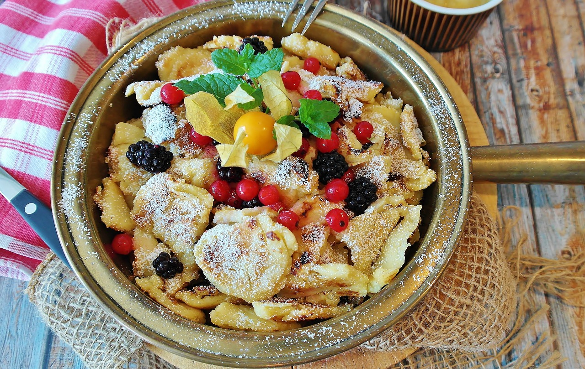

Kaiserschmarrn

| 4 Eier |
| 100 g Mehl |
| 100 ml Milch |
| 1 Prise(n) Salz |
| 1 TL Backpulver |
| 40 g Zucker |
| 80 g Rosinen |
| 1 EL Puderzucker zum Bestreuen |
Zubereitung
1. Schritt
4 Eier, 125g Mehl, 125ml Milch, 1 Prise Salz, 1 TL Backpulver, 40g Zucker
Eier trennen. Eigelb mit Mehl, Milch, Salz, Backpulver und Zucker zu einem glatten Teig verarbeiten und 10 Min. ruhen lassen.
2. Schritt
4 Eiweiss, 80g Rosinen
Eiweisse zu einem stabilen Eischnee schlagen und vorsichtig unter den Teigen heben. Anschleissend die Rosinen hinzugeben.
3. Schritt
4 EL Butter, etwas Puderzucker
2 EL Butter in eine Pfanne geben und bei mittlerer Temperatur einen knusprigen Pfannkuchen braten. Den Pfannkuchen wenden und die restliche Butter hinzufügen. Nach dem backen den Pfannkuchen in Stücke reissen und mit dem Puderzucker bestreuen.
4 Eier, 125g Mehl, 125ml Milch, 1 Prise Salz, 1 TL Backpulver, 40g Zucker
Eier trennen. Eigelb mit Mehl, Milch, Salz, Backpulver und Zucker zu einem glatten Teig verarbeiten und 10 Min. ruhen lassen.
2. Schritt
4 Eiweiss, 80g Rosinen
Eiweisse zu einem stabilen Eischnee schlagen und vorsichtig unter den Teigen heben. Anschleissend die Rosinen hinzugeben.
3. Schritt
4 EL Butter, etwas Puderzucker
2 EL Butter in eine Pfanne geben und bei mittlerer Temperatur einen knusprigen Pfannkuchen braten. Den Pfannkuchen wenden und die restliche Butter hinzufügen. Nach dem backen den Pfannkuchen in Stücke reissen und mit dem Puderzucker bestreuen.
Rezept erstellt von
 Thomas
Thomas